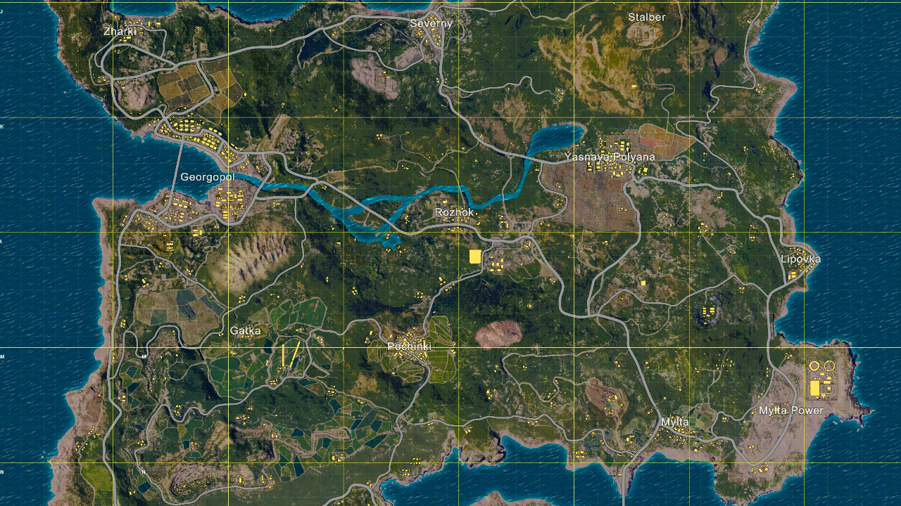
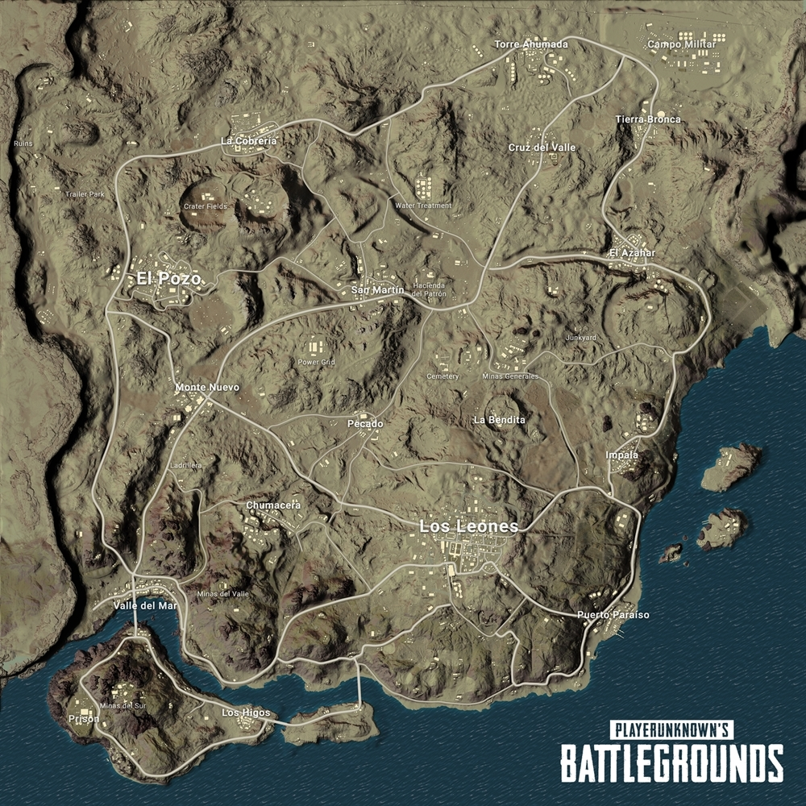
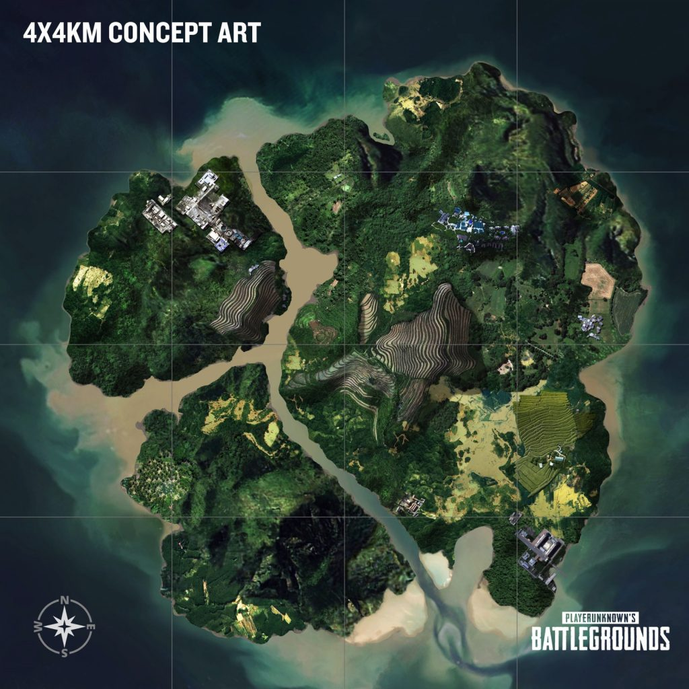
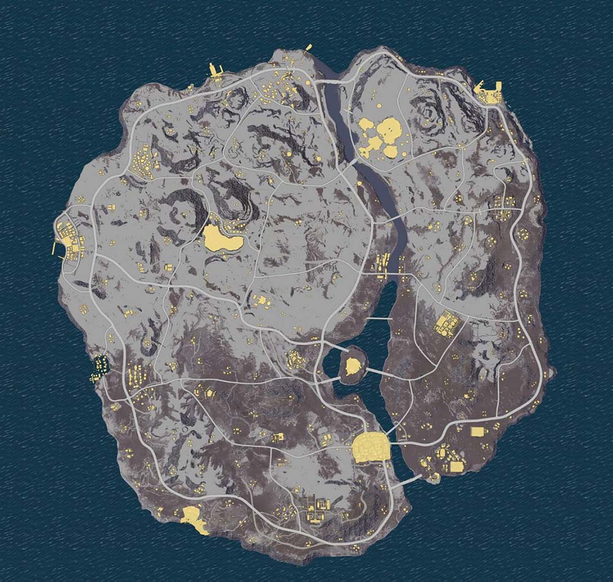

PLAYERUNKNOWN’S BATTLEGROUNDS
Shooter basado en el modo Battle Royale que está siendo desarrollado a través de la retroalimentación con la comunidad. Comenzando de la nada, los usuarios tienen que luchar uno contra el otro para localizar armas y suministros para ser el único sobreviviente. Este juego realista de alta tensión se establece en una isla masiva de 8x8 km con un nivel de detalle que muestra las capacidades de Unreal Engine 4.
Como creador del modo de juego Battle Royale de las series ARMA y H1Z1: King of the Kill, Greene está desarrollando el juego conjuntamente con un equipo veterano de la empresa Bluehole para crear la más diversa y robusta experiencia de Battle Royale hasta la fecha
No solo un juego. Esto es BATTLE ROYALE
Modos de juego
Battlegrounds es un videojuego de acción en el cual hasta 100 jugadores pelean en una Batalla Real (Battle Royale), un tipo de combate a muerte (Deathmatch) en cual hay enfrentamientos para ser el último con vida. Los jugadores pueden ingresar a la partida en solitario, o con un pequeño equipo compuesto por el propio jugador y una, dos o tres personas más, formando respectivamente un dúo, un escuadrón de tres, o un escuadrón de cuatro jugadores. En cualquier caso, la última persona o equipo con vida gana la partida.
Cada partida comienza con los jugadores que saltan en paracaídas a una isla, hacia determinadas partes que ellos mismos eligen. La zona de juego es de aproximadamente 8 por 8 kilómetros en tamaño, estos comienzan sin artículos aparte de las opciones adaptables de la ropa que seleccionan antes de una partida; todo lo anterior desde un avión que sobrevuela aleatoriamente el mapa en línea recta. Una vez aterrizan, los jugadores pueden buscar edificios y otros sitios o estructuras para encontrar armas, vehículos, armaduras, ropa y otro equipamiento. Estos artículos se distribuyen por todo el mapa al comienzo de la partida, con ciertas zonas de alto riesgo, pero, con mejor equipamiento. Estos pasan a permanecer ocultos para evitar ser asesinados o cazar a otros jugadores mientras continúan buscando más equipamiento. Los jugadores asesinados pueden ser saqueados para adquirir su equipamiento. Durante el transcurso del juego un avión volará sobre varias partes del mapa jugable y dejará caer un paquete de botín que contiene elementos que normalmente no se pueden obtener durante la partida. El paquete también emite un humo rojo altamente visible, atrayendo a interesados cerca de él. Los jugadores pueden optar por jugar desde la perspectiva de primera o tercera persona, cada uno con sus propias ventajas y desventajas en el combate y la conciencia situacional.
Cada pocos minutos, el área "segura" del mapa comienza a encogerse hacia un lugar aleatorio, cualquier jugador que se mantenga o quede fuera de la zona segura recibe daño con el tiempo y finalmente muere. Esta se vé como una pared azul brillante que se contrae con el tiempo. Forzando a los jugadores a dirigirse hacia áreas más confinadas y así aumentan las posibilidades de encuentros con demás sobrevivientes. Durante el transcurso de la partida, regiones aleatorias del mapa están resaltadas en rojo y son bombardeadas, siendo una amenaza para los que permanecen en esa zona. En ambos casos, los jugadores son advertidos unos minutos antes de estos eventos, dándoles tiempo para trasladarse a un lugar seguro. En promedio, una ronda completa no toma más de 30 minutos.5
Al final de cada partida, los jugadores ganan dinero en base al tiempo que sobrevivieron, cantidad de asesinatos y el daño provocado. El dinero se utiliza para comprar cajas que contienen elementos cosméticos para la personalización de los personajes.
Mapas
-
Erangel: el primer mapa del juego, con un área de aproximadamente 8x8 km, formado por pueblos y algunas ciudades. La ciudad representativa de este mapa es Pochinki, la cual cuenta con provisiones para más de un escuadrón, sin embargo, al ser una zona con muchas provisiones, hace que mucha gente decida aterrizar aquí, teniendo enfrentamientos continuos. Los árboles pueden ser buena idea para emboscar. El mapa presenta muchos almacenes que suelen tener chalecos, cascos o mochilas.
 -
Miramar: es un mapa desértico, un poco más grande que Erangel, formado por grandes ciudades y montañas. Es recomendable moverse ya que no hay muchos árboles y por esto es blanco fácil. Su ciudad más grande es Los Leones (más o menos 3 veces más grande que Pochinki). Esta zona tiene muchos puntos de spawn de vehículos y muchos edificios grandes que son eficaces para localizar enemigos. Ir en vehículos por montañas puede dar mucha desventaja, más si se quiere atropellar a un enemigo; es recomendable llevar camionetas.
 -
Sanhok: es un mapa ambientado en una selva tropical, este mapa es mucho más pequeño que Erangel o Miramar (4x4), siendo los enfrentamientos más frecuentes. Esta formado por 3 islas unidas por puentes y muchos pueblos, es más difícil localizar a los enemigos. Los árboles y arbustos serán la principal táctica para ganar o pasar desapercibido. Las casas suelen ser chozas. Algunos lugares representativos son "Paradise Resort", "Bootcamp" y "Ruins" en los cuales mucha gente decide caer allí, por lo tanto son zonas con mucha acción y guerra.
 -
Vikendi(beta): es un mapa ambientado en el invierno,siendo un mapa 6x6,esta conformado por 2 grandes islas(y una más pequeña)unidas por puentes,esta mucho mas lleno de ciudades,pueblos y puntos de interes,el mapa es casi repleto de nieve excepto por la parte sur del mapa, haciendo al jugador un blanco mas facil.

Requisitos para jugar al juego
| Mínimos | Recomendados | |
| CPU | Intel Core i5-4430 / AMD FX-6300 | Intel Core i5-6600K / AMD Ryzen 5 1600 |
| RAM | 8 GB | 16 GB |
| SO | Windows 10 / Windows 8.1 / Windows 7 (64-bit) | |
| Tarjeta gráfica | NVIDIA GeForce GTX 960 / AMD Radeon R7 370 | NVIDIA GeForce GTX 1060 / AMD Radeon RX 580 |
| Disco Duro | 30 GB | |
Trailer de PLAYERUNKNOW´S BATTLEGROUNDS
Precio del juego: 15.04€
Volver a la página principal